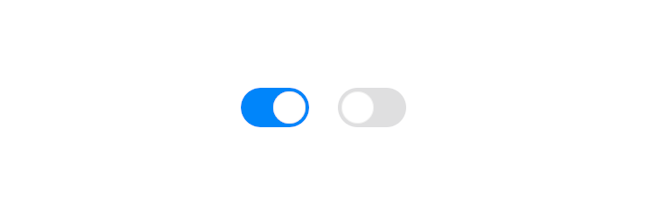
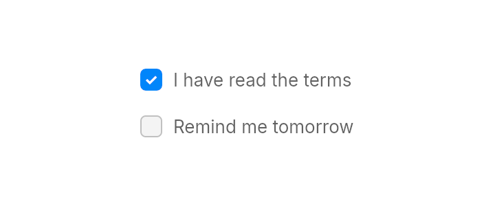
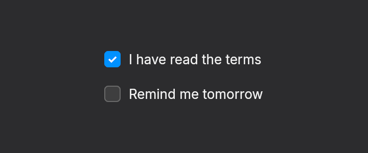
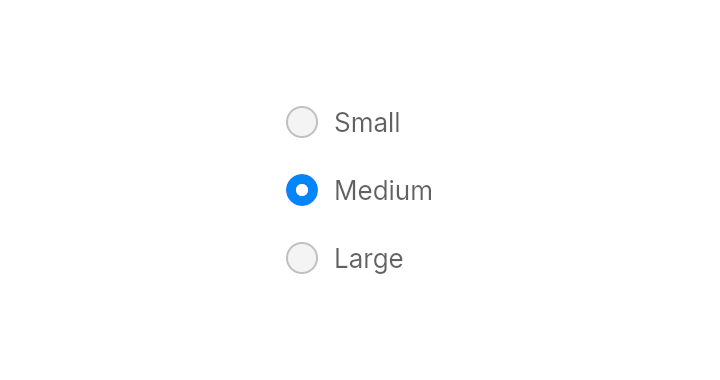
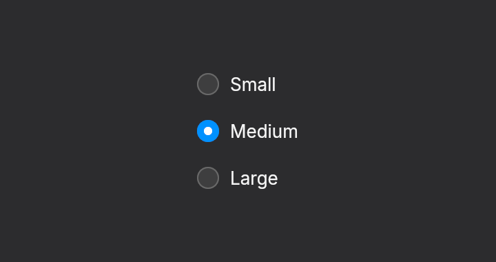
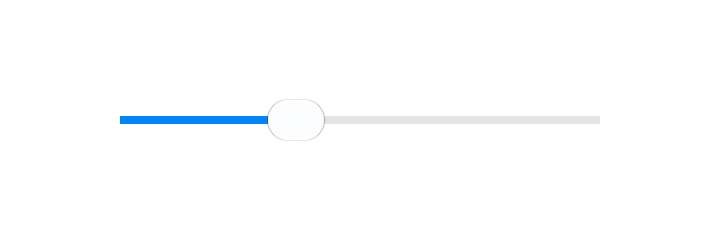
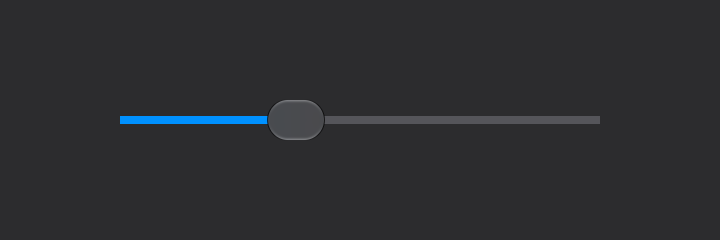
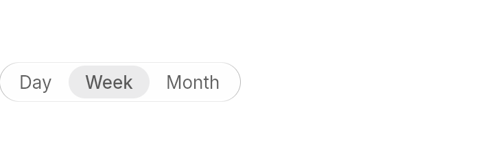
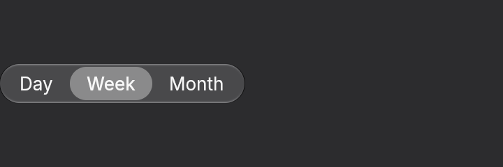

Controls
These controls hold no state of their own. You pass the current value and a message, and your update changes the value. All of them tell screen readers their role and state.
The previews sit on a plain background. Put these controls on a solid or content background, and keep glass for buttons, slider thumbs and bars.
Switch
switch(theme, on, message). The knob slides when the value changes. Give it a label so a screen reader can say what it turns on.

fn switches(theme: &Theme) -> Element<Msg> {
row()
.gap_4()
.items_center()
.child(switch(theme, true, Msg::Toggle).label("Wi-Fi"))
.child(switch(theme, false, Msg::Toggle).label("Bluetooth"))
}Checkbox
checkbox(theme, label, checked, message) draws the label beside the box, and pressing the label toggles it too.


fn checkboxes(theme: &Theme) -> Element<Msg> {
column()
.gap_3()
.child(checkbox(theme, "I have read the terms", true, Msg::Toggle))
.child(checkbox(theme, "Remind me tomorrow", false, Msg::Toggle))
}Radio
radio(theme, label, selected, message). Build a group by calling it once per option, with selected true for the current one, and give each a key.


fn radios(theme: &Theme) -> Element<Msg> {
column()
.gap_3()
.child(radio(theme, "Small", false, Msg::Pick(0)).key("small"))
.child(radio(theme, "Medium", true, Msg::Pick(1)).key("medium"))
.child(radio(theme, "Large", false, Msg::Pick(2)).key("large"))
}Slider
slider(theme, value, on_change) takes a value from 0 to 1 and calls on_change with the new one while the user drags. It also responds to the arrow keys, Home and End when focused, and screen readers can increment, decrement or set it.


fn sliders(theme: &Theme) -> Element<Msg> {
slider(theme, 0.35, Msg::Volume).w(240.0).label("Volume")
}Segmented control
segmented(theme, options, selected, on_select) shows one of a few options at a time. It sizes itself to its labels.


fn segmented_control(theme: &Theme) -> Element<Msg> {
segmented(theme, &["Day", "Week", "Month"], 1, Msg::View)
}